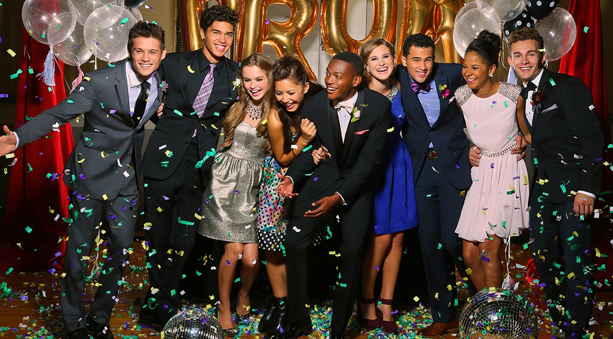
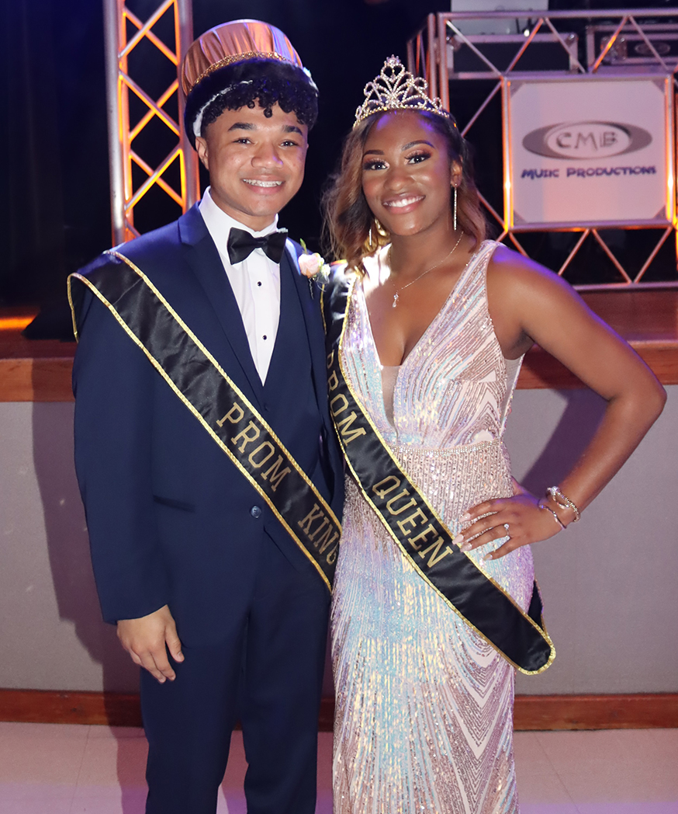
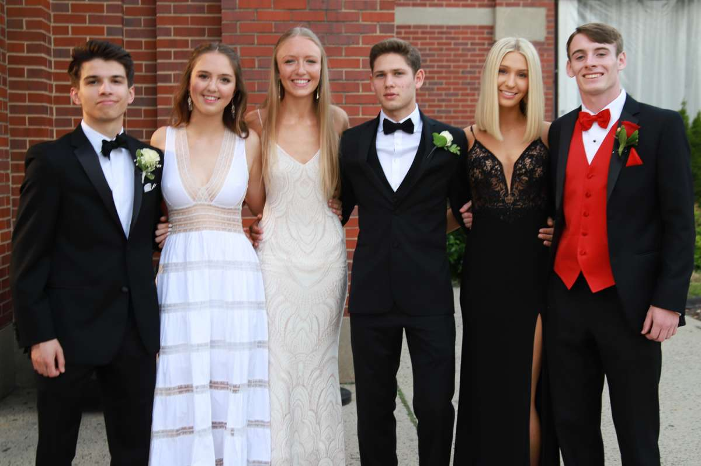

What is prom?
A promenade dance, commonly called a prom, is a dance party for high school students. It may be offered in semi-formal black tie or informal suit for boys, and evening gowns for girls. This event is typically held near the end of the school year. There may be individual junior and senior proms or they may be combined. At a prom, a "prom king" and a "prom queen" may be revealed. These are honorary titles awarded to students elected in a school-wide vote prior to the prom. Other students may be honored with inclusion in a prom court. The selection method for a prom court is similar to that of homecoming queen/princess, king/prince, and court. Inclusion in a prom court may be a reflection of popularity of those students elected and their level of participation in school activities, such as clubs or sports. The "prom queen" and "prom king" may be given crowns to wear. Members of the prom court may be given sashes to wear and photographed together.
  